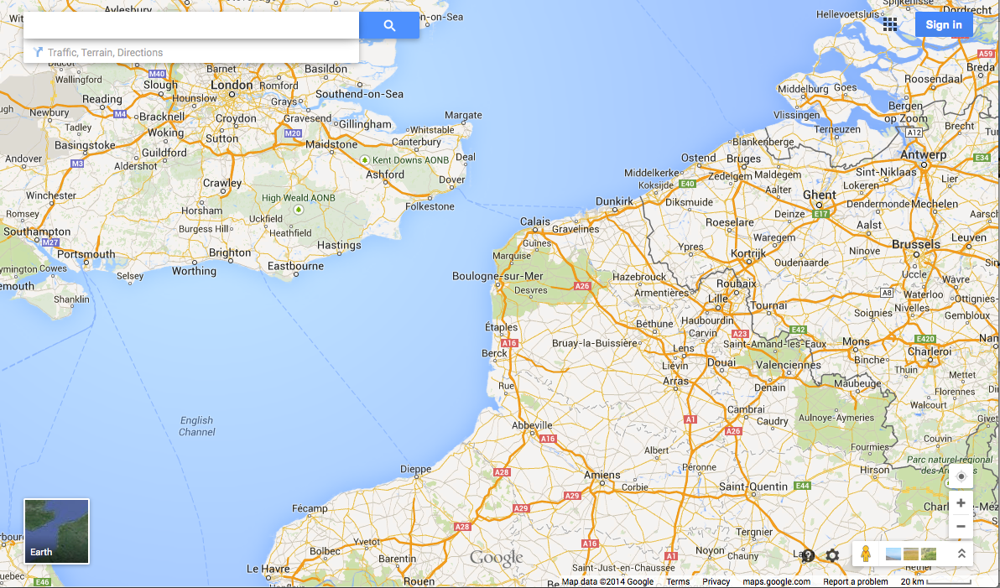
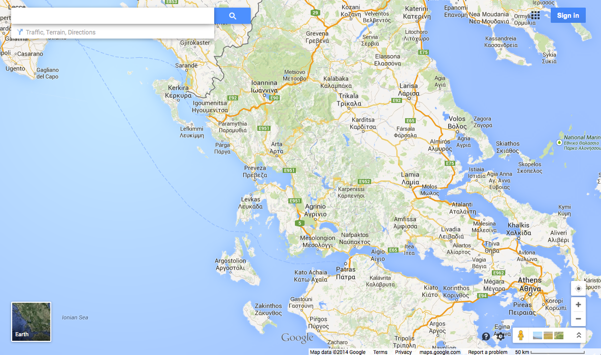

The default view, 'Map' includes street data and other transport links, place names and basic topographic features including rivers, lakes and parkland areas. National borders are marked, as are sub-national borders in some areas. Most features have thresholds set for the scale at which they will start to appear on the map - in other words, as the user zooms in, more features are shown.
The following figures show an example of Google Maps in the default 'Map' mode, illustrating some of these features. The first map is from 2011 and centred so as to show parts of both Britain and France, and some differences in appearance of the two countries can be seen. Note the different road style used on either side of the English Channel. It can just be seen that French region boundaries are included; by contrast English county boundaries are not shown.
The second figure is of the same region taken in 2014. The road styles are not so different in this version. Can you see any other differences?

It can also be seen that local place name spellings - such as 'Oostende' are used in each relevant country, rather than universally using English spelling variants. Where the primary name is not written in a Latin alphabet, local scripts are used, usually together with transliterations of the local spelling - see for example the labelling of Athens.
A general problem faced by anyone trying to compile international maps is that maps are not an objective representation of truth, but rather have to take into account disputed features including borders and place names. In some cases, alternative names are shown on the map: for example 'Londonderry / Derry' is used as a label, and three alternate spellings are given for the national label of Switzerland. Clearly, these two examples represent different issues: the former the politicised area of disputed place names, and the latter an administrative issue of alternative language uses. Alternative versions of international borders might also be shown - look for example at Cyprus or Israel - although this becomes confusing when you note that these are maps without a key.
In some instances,
Google appear to have ducked the question of how to name a location,
perhaps reflecting the fact that they are a commercial organisation,
keen not to upset investors or affect advertising income: an example of this
was the body of water between Japan, China and the Korean
peninsula: this is variously called the Sea of Japan, the East Sea or
the East Sea of Korea (by Japan, South Korea and North Korea
respectively), yet until 2013 it remained resolutely unlabelled (it is now labelled as the Sea of Japan).
In addition, in 2013 Palestine was formally recognised in Google Maps and in 2014, Google Maps also updated the border between Russia - Crimea reflecting the ongoing dispute.
A popular feature of Google Maps is the integration of high quality aerial imagery. This is labelled as 'satellite' (Earth) view, although in fact it contains both remotely sensed satellite imagery and higher resolution imagery captured through aerial photography. Figure 4 shows a 'satellite' image of Red Square in Moscow; the use of local labelling for streets is illustrated in the image.

Satellite imagery has been demonstrated to be subject to censorship by Google (or upstream data suppliers) in some cases, although the extent to which this has occurred is disputed. In some cases, Google are believed to have changed aerial imagery following requests from national governments (images of Basra in southern Iraq in January 2007 are often cited) whereas in other cases modifications may have been made by the data holders prior to the data being licensed by Google.
Images have been removed in some locations and blurred in others; the following figure shows an example of such blurring from 2009, the image shows (or doesn't!) the Huis ten Bosch, one of the official residences of the Dutch royal family. Non-blurred parts can be seen near the top of the image. [Update October 2014: This location is no longer subject to blurring!].

Prominent sites such as the White House, GCHQ, the Pentagon etc do appear on Google Maps uncensored. However, the data used is generally out of date. Further information about alleged blurring and removal of satellite imagery can be found at http://en.wikipedia. org/wiki/Satellite_map_images_with_missing_or_unclear_data
Previous versions of the Google Maps interface have included a 'Hybrid' mode, in which satellite imagery is shown, with surface feature information (such as roads) overlain on the image. This mode has been removed, and instead labels automatically appear in this mode.
An additional view style is the 'Terrain' mode; the following figure shows the terrain view of the Lake District. This was initially offered as an alternative to the Map and Satellite/Earth views, but is now made available as an optional layer whilst using the Map view. A shaded relief map is used in conjunction with the standard maps of roads and other surface features. In a similar manner to the default map and satellite view, higher resolution images are used as the user zooms in. Whilst roads are included in the terrain map, they are shown with less prominence than is the case with the default map view.